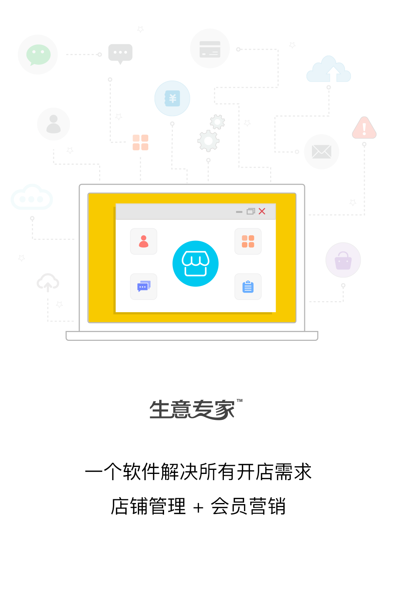
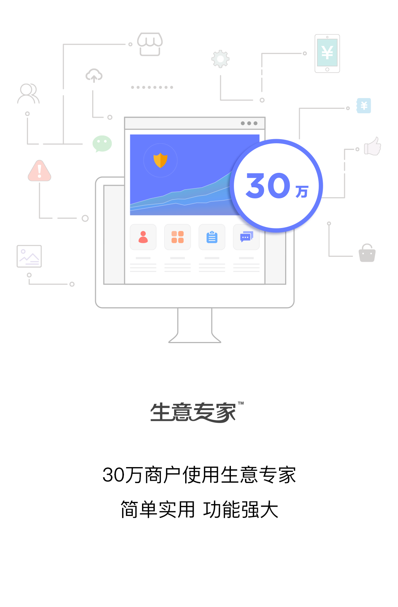

<!-- slides page -->

<ion-header class="ion-no-border">
  <ion-toolbar>
    <ion-buttons slot="end">
      <ion-button [hidden]="!showSkip" color="primary" fill="outline">跳过</ion-button>
    </ion-buttons>
  </ion-toolbar>
</ion-header>

<ion-content>
  <ion-slides mode="md" pager="md" scrollbar="md" pager="true" scrollbar="false" (ionSlideWillChange)="onSlideWillChange($event)">
    <ion-slide>
      
    </ion-slide>
    <ion-slide>
      
    </ion-slide>
    <ion-slide>
      <div class="slide-three">
        
        <div class="login-signup-buttons">
          <ion-button color="primary" (click)="onClick()" expand="block" fill="outline" shape="round">
            登录
          </ion-button>
          <ion-button color="primary" (click)="onClick()" expand="block" shape="round">
            注册
          </ion-button>
        </div>
      </div>
  </ion-slide>
  </ion-slides>
</ion-content>
